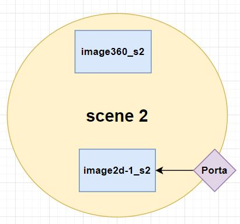
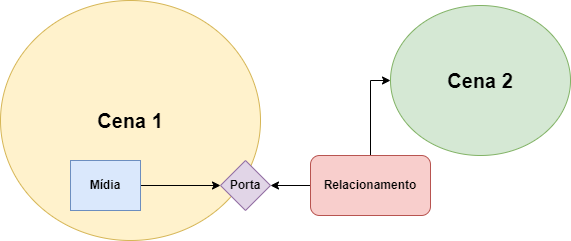

Tutorial - Portas em um projeto MultiSEL
As portas são responsáveis por disponibilizar uma interface de acesso para uma mídia ou ES dentro de uma cena. No AMUSE VR usa-se as portas para a apresentação mudar de uma cena para outra através de uma relacionamento.
Portas
A imagem abaixo mostra na linha 41 um exemplo porta.

Neste exemplo a cena 2 possui duas mídias do tipo imagem e uma porta que aponta para uma das imagens componentes, conforme a ilustração abaixo.
No AMUSE VR, todo relacionamento (tag relation) externo às cenas necessita de uma porta para dar acesso ao conteúdo da cena.
Todas as portas devem ser criadas dentro de uma cena (tag scene) que contenha a mídia que chamará a outra cena, como na figura abaixo.
Para criar uma porta é necessário criar a tag port, com um atributo identificador único “id” e o atributo component, que representa a mídia que acessa a porta, como na linha 41.
Atenção
Ao criar um comando interativo de clique em alguma mídia, é necessário, criar uma porta dentro da mesma cena que contenha a mídia que responde ao clique. Além disso, é necessário criar um relacionamento externo à cena, como visto anteriormente.